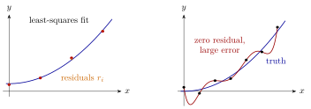
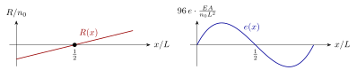
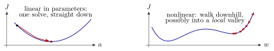
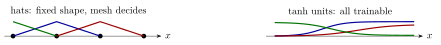

Lecture A
From Curve Fitting to Neural Networks
Lectures A to D form Part IV, on physics-based machine learning and model reduction. Lectures 3 to 6 do not depend on them. Lectures A and B need only Lecture 2 and Exercise 2: read them right after the exercise if you are curious how the machinery you just built connects to regression, machine learning, and the “physics-informed” methods of current research — or after Lecture 4, or later.
A.1 Why this detour?
Strip Lecture 2 to its skeleton and you find three moves: choose a parameterized family of functions; define a residual that measures how wrong a candidate is; adjust the parameters to make it small. Now open any machine-learning text at the chapter called regression and you find: choose a parameterized model; define a loss that measures how wrong it is; adjust the parameters to make it small. These are not similar subjects. They are the same subject, grown in two different fields, with two vocabularies — and in recent years the two have merged into methods that train neural networks on differential equations. This lecture builds the dictionary and clears up the one confusion that plagues both fields (error versus residual); Lecture B then uses the dictionary to read two modern methods fluently.
A.2 Regression: fitting a function to data
The setup machine learning starts from: \(m\) data points \((x_i, y_i)\) — measurements, possibly noisy — and no governing equation in sight. We believe the data follow some trend and choose a model family, say a parabola without linear term (to keep the example \(2\times2\)): \[\tilde y(x) = a_1 + a_2\,x^2 \qquad\text{— an ansatz, in the language of Section~\href{02_boundary_value_problem.html\#sec:ansatz}{2.5}.}\] How wrong is a candidate? At each data point it misses by the data residual \[r_i = \tilde y(x_i) - y_i ,\] and least-squares regression minimizes the total squared miss, \(J(a_1,a_2) = \sum_i r_i^2\). Setting \(\partial J/\partial a_1 = \partial J/\partial a_2 = 0\) gives — write the model values as \(\tilde{\mathbf{y}} = \mathbf{A}\,\mathbf{a}\) with \(A_{ij} = \varphi_j(x_i)\), here with the basis \(\varphi_1 = 1\), \(\varphi_2 = x^2\) — the normal equations \[(\mathbf{A}^{\mathsf{T}}\mathbf{A})\,\mathbf{a} = \mathbf{A}^{\mathsf{T}}\mathbf{y} . \tag{A.1}\] A symmetric matrix times the unknown parameters equals a right-hand side built from the given information: we have seen this animal before, in equation (2.12). Because the family is linear in its parameters, one linear solve finishes the job — no iteration, no searching.
Worked example.
Data \((0,1)\), \((1,2)\), \((2,5)\). Then \[\mathbf{A} = \begin{bmatrix}1&0\\1&1\\1&4\end{bmatrix},\qquad \mathbf{A}^{\mathsf{T}}\mathbf{A} = \begin{bmatrix}3&5\\5&17\end{bmatrix},\qquad \mathbf{A}^{\mathsf{T}}\mathbf{y} = \begin{bmatrix}8\\22\end{bmatrix} \quad\Longrightarrow\quad a_1 = 1,\ a_2 = 1,\] and the fit \(\tilde y = 1 + x^2\) passes through all three points with zero residual: the data were secretly generated by a member of the family, and the method found it — the Section 2.6 principle (“if the truth lives in the family, any sensible method finds it”), now wearing data. Add a fourth point \((3, 9)\), which lies off that parabola, and the same two lines of algebra give \(a_1 = \tfrac{8}{7}\approx 1.14\), \(a_2 = \tfrac{87}{98}\approx 0.89\): no member of the family fits all four points, so least squares negotiates the best compromise, residuals \((0.14,\ 0.03,\ -0.31,\ 0.13)\) spread over all of them (Fig. A.1, left).

A.3 Residual versus error — they are not the same thing
The right panel of Fig. A.1 already shows the danger. Let us now pin the two notions down precisely, first for data, then — where the distinction is even sharper — for differential equations. Few confusions in this field are more common, or more quietly damaging, than treating these two words as synonyms.
With data (regression).
The residual is the distance of the model to the data: \(r_i = \tilde y(x_i) - y_i\), computable by anyone with the data in hand. The error is the distance of the model to the truth — the noiseless function the data were sampled from — which nobody possesses. Driving the residual to zero by making the family flexible enough to thread every noisy point (interpolation) is easy, and it makes the error worse: the model has memorized the noise. Machine learning calls this overfitting, and its whole apparatus of validation sets exists to estimate the error when only residuals are observable. Note one reason the two are so often conflated here: both are measured in the units of \(y\), so they even look alike.
With a differential equation (Lecture 2).
Now the two notions split apart so far that they do not even share physical units. Take an approximation \(\tilde u\) of the bar problem. The residual, \[R(x) = EA\,\tilde u''(x) + n(x),\] is what is left over when the candidate is pushed through the equation: an unbalanced force per unit length, in N/m — computable always, exact solution not required. The error, \[e(x) = \tilde u(x) - u_{\mathrm{ex}}(x),\] is the distance to the true solution: a displacement, in meters — computable never, outside of textbook problems, because \(u_{\mathrm{ex}}\) is exactly what we do not have. One is a force imbalance, the other a displacement discrepancy. Calling them synonyms is a dimensional crime.
They are, however, related — and the relation is beautiful. Subtract the exact equation \(EA\,u_{\mathrm{ex}}'' + n = 0\) from the definition of \(R\): \[EA\,e''(x) = R(x), \qquad e = 0 \text{ wherever } u \text{ is prescribed.} \tag{A.2}\] Read it as a sentence: the error is itself the solution of our original boundary value problem, with the residual acting as the (reversed) load. The residual is a fictitious force imbalance that our approximation leaves unpaid; the error is the deflection the structure suffers under that imbalance. At once we see when “small residual” implies “small error”: when the structure does not amplify loads — a stiff bar turns even a sloppy residual into a tiny error, a floppy one does not. (Making this quantitative is a mature branch of FEM theory, a posteriori error estimation; equation (A.2) is its seed.)

A concrete pair to stare at: for the one-parameter collocation solution of Section 2.6 (linear load, collocation at \(L/2\), \(a_1 = n_0/(4EA)\)) one computes \[R(x) = n_0\Bigl(\frac{x}{L} - \frac12\Bigr), \qquad e(x) = \frac{n_0\,x\,(L-x)(L-2x)}{12\,EA\,L},\] plotted in Fig. A.2 — and you can verify (A.2) on them by differentiating \(e\) twice.
Key idea
Residual vs. error. The residual measures the violation of what you have (the data; the equation) and is always computable. The error measures the distance to what you want (the truth; the exact solution) and is almost never computable. All methods minimize residuals and hope about errors; the hope is justified only through the problem itself — in our case through (A.2). Zero residual at selected points does not mean zero residual elsewhere, and small residual does not by itself mean small error.
A.4 When the family is nonlinear in its parameters
Everything so far — regression, collocation, Galerkin — ended in one linear solve, because every family was a linear combination of fixed functions, \(\sum a_j \varphi_j\). Now try to fit growth data with \[\tilde y(x) = a\,e^{b x}.\] The parameter \(a\) still enters linearly, but \(b\) sits inside the exponential. Write the least-squares loss and differentiate: the equations for \((a,b)\) contain \(e^{bx_i}\), products of unknowns — no normal equations, no single solve, no formula. (For this particular family a logarithm rescues you: \(\ln\tilde y = \ln a + bx\) is linear in \((\ln a, b)\) — but it silently re-weights the misfit toward small \(y\) values, and no such trick exists in general.) Welcome to nonlinear regression: the loss \(J\) is still a perfectly well-defined function of the parameters; we have merely lost the one-step path to its minimum. What remains is to walk.
A.5 Gradient descent: walking downhill
Picture \(J\) as a landscape over parameter space. The gradient \(\nabla J = (\partial J/\partial w_1, \dots, \partial J/\partial w_n)\) collects the slopes of \(J\) in each parameter direction; as a vector it points uphill, steepest. So take a step the other way, and repeat:
Key idea
Gradient descent. Choose a starting point \(\mathbf{w}^0\) and a step size (“learning rate”) \(\eta > 0\); iterate \[\mathbf{w}^{k+1} = \mathbf{w}^k - \eta\, \nabla J(\mathbf{w}^k)\] until \(J\) stops improving. Too small an \(\eta\) crawls; too large overshoots the valley and diverges; and the walk can settle in a local minimum — the landscape of a nonlinear family is not a single bowl.
A walk you can follow by hand.
Fit \(\tilde y = e^{bx}\) (one parameter, \(a\) frozen at 1) to the data \((0,1)\), \((1,2)\). The first point is matched for every \(b\), so \(J(b) = (e^{b} - 2)^2\), with \(J'(b) = 2(e^b - 2)\,e^b\) and the exact minimum at \(b = \ln 2 \approx 0.6931\). Gradient descent from \(b^0 = 0\) with \(\eta = 0.1\): \[\begin{array}{c|cccccc|c} k & 0 & 1 & 2 & 3 & 4 & 5 & \to\infty\\\hline b^k & 0 & 0.2000 & 0.3902 & 0.5446 & 0.6398 & 0.6792 & 0.6931\\ J(b^k) & 1.0000 & 0.6062 & 0.2732 & 0.0762 & 0.0108 & 0.0008 & 0 \end{array}\] Five steps bring \(J\) below \(10^{-3}\) and \(b\) within about 2 % of \(\ln 2\) — on a one-dimensional, friendly landscape. Real networks walk in spaces of millions of dimensions, with noisy gradients and winding valleys; everything called “training” in machine learning is an industrial-strength descendant of this little table. The descendant used in the exercises, Adam, is gradient descent with a separate, automatically adapted step size for each parameter, plus momentum (a running average of past gradients).
Why did Lectures 1 and 2 never need to walk? Look back at Fig. 1.4: for a linear problem the landscape \(\Pi(\mathbf{u}) = \tfrac12 \mathbf{u}^{\mathsf{T}}\mathbf{K}\mathbf{u} - \mathbf{u}^{\mathsf{T}}\mathbf{f}\) is a perfect bowl, and “set the gradient to zero” (1.6) is one linear solve that lands exactly at the bottom — walking would be a waste. Gradient descent is the price of admission for nonlinear families (Fig. A.3); what it buys is the freedom to use much richer families. Such as:

A.6 A neural network is an adjustable ansatz
Strip the mystique: a small neural network with one hidden layer of \(H\) units is the function \[\tilde u(x;\, \mathbf{w}) \;=\; \sum_{j=1}^{H} c_j\, \tanh\!\bigl(w_j\,x + b_j\bigr) \;+\; d, \tag{A.3}\] with parameters (“weights”) \(\mathbf{w} = (c_j, w_j, b_j, d)\) — for deeper networks, feed the output of one such layer as input into the next. Compare (A.3) with the ansatz (2.8) of Lecture 2: it is again a sum of basis functions times coefficients — except each basis function \(\tanh(w_j x + b_j)\) now carries parameters of its own. Where a hat function is a little tent of fixed position and width, dictated by the mesh, a \(\tanh\) unit is a smooth step whose position (\(-b_j/w_j\)), steepness (\(w_j\)), height and sign (\(c_j\)) are all adjustable (Fig. A.4). The family is vastly more flexible — a classical theorem (universal approximation) says that with enough units it can come arbitrarily close to any continuous function on an interval — and it is hopelessly nonlinear in its parameters, so everything from Sections A.4 and A.5 applies: no normal equations, walk downhill. “Training a network” is nonlinear least-squares regression (with the squared loss used throughout these notes); the gradients are computed exactly by the chain rule, applied layer by layer from the output back to the input and reusing the intermediate results — an algorithm called backpropagation.

The dictionary so far, for crossing between the literatures:
| machine learning says | these notes said |
|---|---|
| model, architecture | ansatz, family of candidate functions |
| features, basis functions, units | \(\varphi_j\), shape functions |
| weights, parameters | coefficients \(a_j\), nodal values \(u_i\) |
| loss, objective | \(\sum r_i^2\), \(\int R^2\mathrm{d}x\), energy \(\Pi\) |
| training | solving / minimizing |
| inference, prediction | evaluating \(\tilde u(x)\) |
| backpropagation | chain rule, organized |
Looking ahead
We now hold every ingredient: a differential equation and its residual (Lecture 2), a flexible nonlinear ansatz (A.3), and an optimizer that needs no linear structure (Section A.5). Lecture B snaps them together — and the result is, almost verbatim, Lecture 2’s collocation method wearing a neural network.
Companion exercise: Exercise A
Notebook Exercise_A_Regression_and_NN.ipynb: normal equations by hand, residual versus error on the bar (\(EA\,e'' = R\) verified symbolically), gradient descent on the exponential fit, a tiny tanh network trained from scratch, and overfitting in two inequalities.